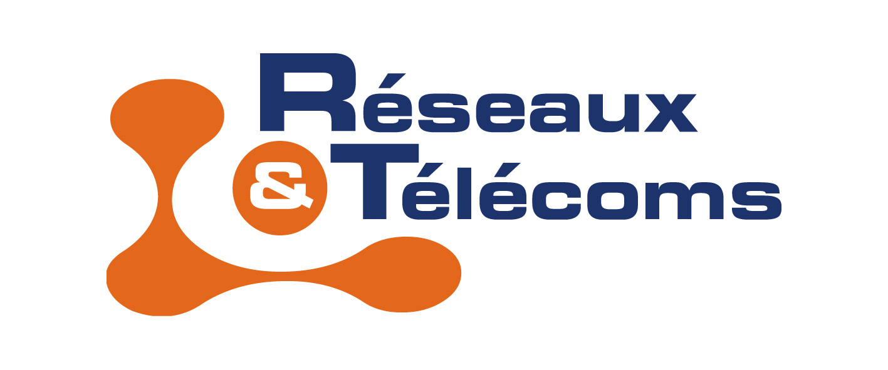
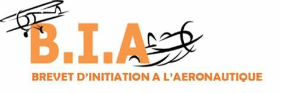
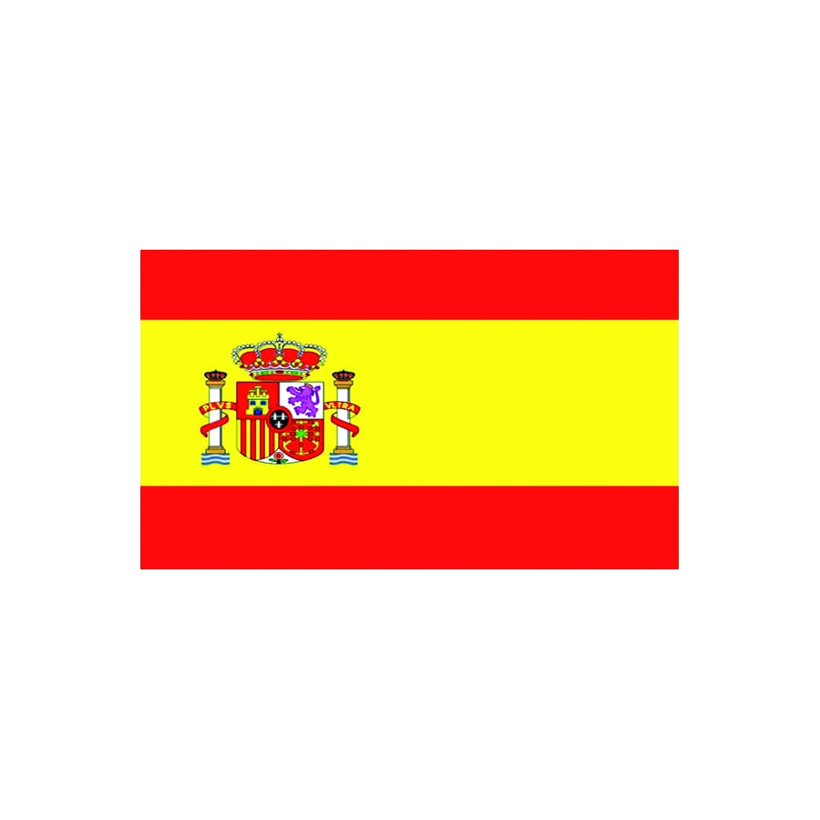
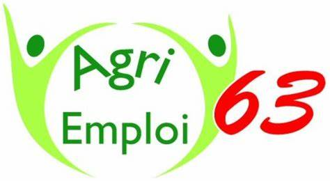
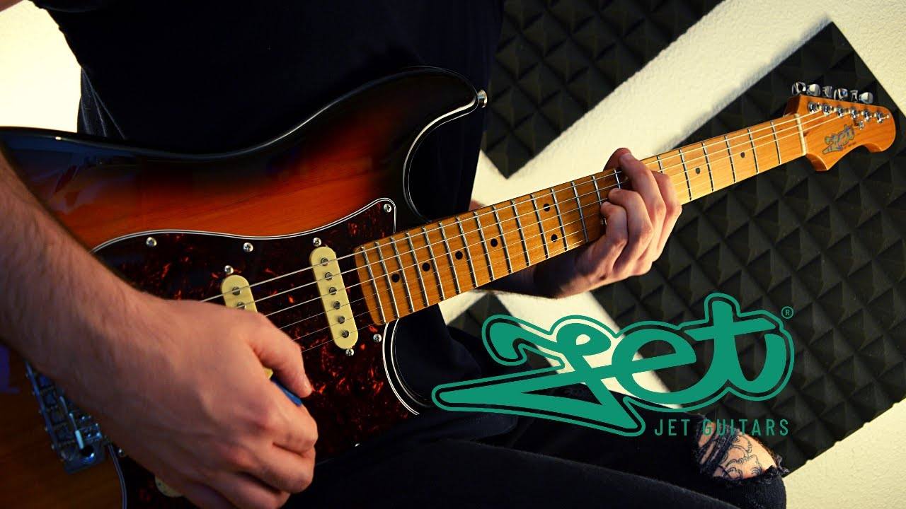
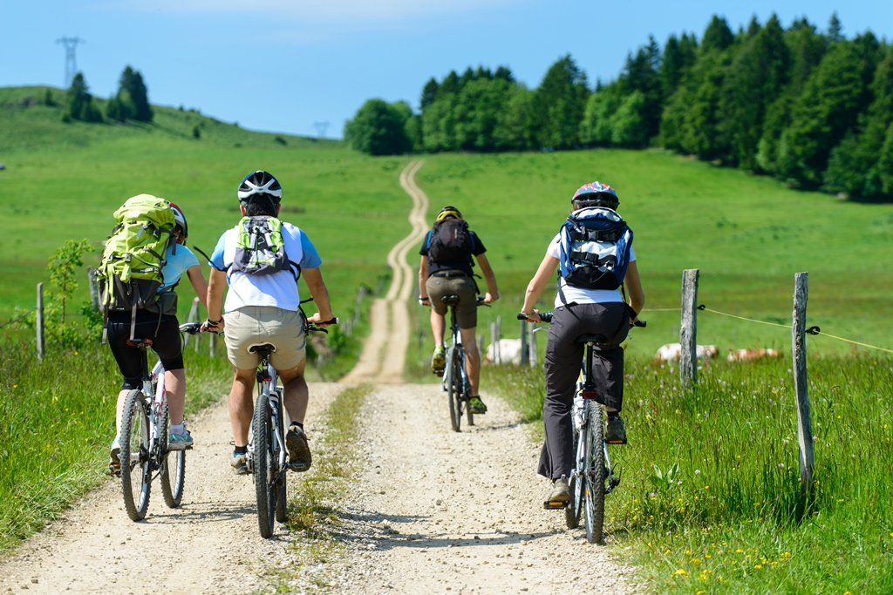
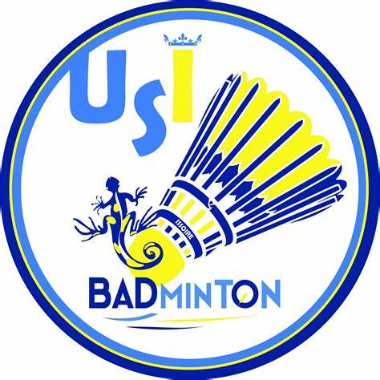
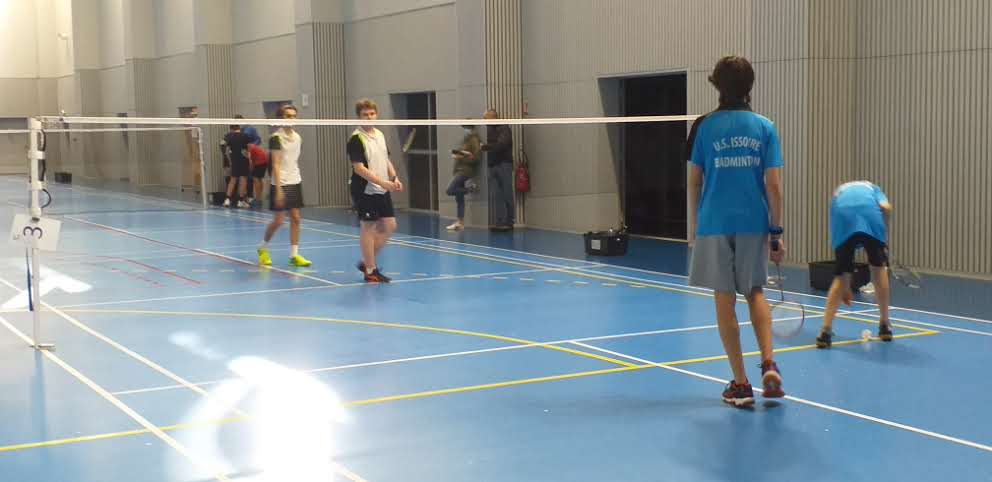

Présentation
À propos de moi
Bonjour, je m'appelle Hugo, j'ai 19 ans et je suis originaire d'Issoire dans le Puy-de-Dôme (63500).
J'ai obtenu mon Baccalauréat général au lycée LaFayette (Clermont-Ferrand) avec les spécialités :
"Mathématiques" et "Numérique et sciences informatiques".
Je suis persévérant, autonome et sérieux,
ainsi que passionné par les nouvelles technologies et le développement.
J'ai donc décidé d'intégrer le BUT Réseaux et Télécommunications (BUT R&T) à l'Université Clermont Auvergne.
Je recherche un stage du 7 avril 2026 jusqu'au 12 juin 2026 inclus dans le
domaine de la cybersécurité ou de l'administration réseaux et systèmes.
Persévérant, sérieux et à l'écoute, je suis motivé à m'investir pleinement
dans différents projets en réseaux et systèmes.
(voir mes compétences techniques).
Mon objectif professionnel après mon BUT est de poursuivre mes études dans le domaine des Réseaux et Systèmes jusqu'au Master.
Formations
BUT Réseaux et Télécommunications - Université Clermont Auvergne (63)

Contexte
Je suis actuellement en 1re année de BUT R&T.
Description
Le BUT Réseaux et Télécommunications (R&T) couvre des sujets tels que l'administration des réseaux, la sécurité informatique, les technologies de transmission de données, et la programmation.
Obtention du Baccalauréat Général au Lycée Lafayette (Clermont-Fr)
Contexte
Mes spécialités en terminal : Mathématiques et NSI.
La spécialité que j'ai abandonnée en Première : Science de l'ingénieur.
Résultat
J'ai obtenu la mention Assez Bien au Baccalauréat.
Brevet d'Initiation à l'Aéronautique (BIA)

Contexte
J'ai obtenu mon BIA durant l'année de première générale.
Description
Le Brevet d'Initiation à l'Aéronautique (BIA) est un diplôme qui atteste des connaissances de base dans le domaine de l'aéronautique. Cette formation couvre divers sujets tels que le fonctionnement des aéronefs, les principes de vol, la météorologie aéronautique, la navigation aérienne, la réglementation et la sécurité.
Résultat
J'ai obtenu la mention Bien
Compétences
Techniques
Le pourcentage 100 % correspond à la moyenne maximale qu'un enseignant pourrait attribuer à un élève de 1er année en BUT R&T
Programmation
Réseaux
Télécommunications
Téléphonie VoIP
Qualités
Langues
- Anglais
- Espagnol

Expériences professionnelles
Réserviste en gendarmerie - SRJ 63
Contexte
J'ai intégré la réserve opérationnelle de Clermont-Ferrand pour apporter un soutien aux forces de l'ordre dans diverses missions de sécurité publique. Mon engagement a débuté en août 2024 par ma Préparation militaire à la gendarmerie à Sathonay-Camp dans la ville de Lyon, motivé par un désir de servir la communauté et de contribuer à la sécurité nationale.
Objectifs
Mon principal objectif était d'assurer une présence dissuasive sur le terrain et d'intervenir en cas de besoin pour maintenir l'ordre et la tranquillité publique.
Travail
Je participe régulièrement aux patrouilles de surveillance dans les zones urbaines et rurales telles que Tiers et Issoire, visant à prévenir les délits et à rassurer la population par une présence visible et proactive.
J'ai contribué à la mise en place de points de contrôle pour vérifier les documents des conducteurs et assurer le respect des règles de la route, garantissant ainsi la sécurité des usagers.
J'ai assisté les unités actives lors d'interventions sur des accidents, tels qu'un accident de la route à Tiers où j'ai géré le flux de véhicules passant à proximité.
Résultats
À ce jour, j'ai réalisé au total 8 patrouilles. Lors de ma prestation de serment, j'ai ressenti une immense fierté et un profond sens du devoir. Ce moment solennel a marqué officiellement mon engagement envers la gendarmerie et la communauté. J'ai été promu au grade de Brigadier Chef, ce qui a renforcé ma détermination à exceller dans mes fonctions et à honorer la confiance placée en moi.
Impact personnel
Être réserviste en gendarmerie m'a apporté un sentiment d'accomplissement personnel et de satisfaction. Chaque mission accomplie, chaque intervention réussie, m'a permis de me sentir utile et de voir l'impact positif de mon travail sur la sécurité publique.
Mon engagement en tant que réserviste a renforcé ma conviction que chaque individu peut contribuer à la sécurité et au bien-être de la société.
Stage d'observation - Net Service Informatique (Clermont-Ferrand)
Contexte
Dans le cadre de mes études en Réseau et Télécommunication, j’ai effectué un stage d’observation chez Net Service Informatique en février 2024.
Cette entreprise, spécialisée dans les services informatiques et la gestion de réseaux, m’a permis de découvrir le fonctionnement interne d’une entreprise du secteur technologique.
Objectifs
L’objectif principal de ce stage était de me familiariser avec les métiers liés à l’informatique et aux réseaux, tout en observant les différentes étapes du support technique, de la gestion des infrastructures et des interactions avec les clients.
Travail
J’ai suivi les techniciens dans leurs interventions, découvrant les pratiques de maintenance matérielle et logicielle. J’ai assisté à des démonstrations d’installation et de configuration de serveurs, ainsi qu’à des tests de connectivité réseau. J’ai également observé des interactions avec les clients, notamment pour diagnostiquer et résoudre des pannes informatiques.
Résultats
À l’issue de ce stage, j’ai acquis une meilleure compréhension du monde professionnel dans l’informatique, en particulier des défis techniques et des attentes des clients. J’ai également élargi mes connaissances théoriques avec des exemples pratiques, ce qui a consolidé mon intérêt pour ce domaine.
Impact personnel
Cette expérience m’a permis de confirmer mon choix de carrière en réseau et télécommunication. J’ai pris conscience de l’importance de la rigueur et de la méthode dans la résolution de problèmes techniques. Cette immersion m’a également motivé à approfondir mes compétences pour contribuer efficacement dans un environnement similaire à l’avenir.
Travail d'été - Castration de maïs

Contexte
J’ai travaillé durant l’été dans une exploitation agricole spécialisée dans la culture du maïs à Issoire (63500).
Ce travail saisonnier nécessitait de la rigueur, de l’endurance et un fort esprit d’équipe.

Objectifs
Mon objectif principal était de contribuer à l’étape de castration des plants de maïs.
Il s’agissait également d’une opportunité pour développer des compétences en travail collectif.
Travail
Mon rôle consistait à enlever les panicules mâles des plants de maïs afin de prévenir l'autopollinisation.
Cette tâche exigeait une attention constante et une grande précision pour ne pas endommager les plants.
J'ai également collaboré avec mes collègues pour optimiser notre efficacité et respecter les délais imposés par l'exploitation.
Résultats
Grâce à notre travail et notre coordination, nous avons réussi à castrer un nombre significatif de plants de maïs, contribuant ainsi à une récolte de semences de qualité.
Notre équipe a atteint les objectifs de production fixés par l'exploitation, ce qui a été reconnu et apprécié par notre employeur.
Cette expérience a également renforcé notre esprit d'équipe et notre capacité à travailler sous pression.
Impact personnel
Ce travail saisonnier m'a permis de développer plusieurs compétences essentielles, telles que la rigueur, l'endurance physique et la capacité à travailler en équipe.
J'ai également appris à gérer mon temps efficacement et à maintenir un haut niveau de concentration sur des tâches répétitives.
Projets
Divers
Centres d'intérêt
La musique

Je suis autodidacte à la guitare et au piano depuis plus de 5 mois.
J'ai appris quelques riffs et début de morceau à la guitare, en voici quelques exemples de titres :
- Do I Wanna Know
- Arctic Monkeys - Parisienne Walkways
- Gary Moore - Smoke on the water
- Deep Purple - Come as you are
- Nirvana - Still loving you
- Scorpions - Passcaglia - Handel/Halvorsen
- The Winner Takes It All - ABBA
Je joue aussi du Piano cependant j'ai appris moins de chansons qu'à la guitare électrique. Le seul morceau que je sais actuellement bien jouer est :
Le morceau que je suis entrain d'apprendre est :
Activités en plein air
Je fais souvent des randonnées à pied en famille durant les weekends ou bien les vacances scolaires chez moi, à Issoire. Ces randonnées varient de 5 à 8 km.
Nos sorties nous permettent de découvrir des paysages magnifiques, de profiter de la nature et de passer du temps de qualité ensemble. Nous aimons explorer différents sentiers, que ce soit en forêt, en montagne ou le long de rivières, et cela nous aide à rester actifs et à nous déconnecter du quotidien.
Le vélo

En plus, je fais du vélo pendant mon temps libre avec une distance équivalente à celle que je fais à pied, ce qui me permet de rester en forme et de profiter de la nature d'une autre manière.
Le badminton


J'ai pratiqué du badminton en club à l'USI pendant 6 ans et j'ai arrêté à l'âge de 16 ans.
Durant cette période, j'ai participé à plusieurs compétitions locales et régionales, ce qui m'a permis de développer des compétences techniques et stratégiques. J'ai arrêté le badminton au niveau P10 (en double), ce qui correspond à un niveau assez bas, je peux justifier ce niveau par rapport au nombre de compétitions auxquelles j'ai participé (peu de compétitions). Le badminton m'a également appris l'importance du travail d'équipe, de la persévérance et de la discipline. J'ai fait de nombreuses rencontres et j'ai noué des amitiés durables grâce à ce sport.
Mon CV
Me contacter
Pour me contacter, n'hésitez pas à me joindre via mon mail professionnel :